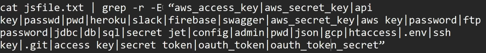

- JavaScript File Analysis for Secret Informations/leakage
- Find a target - domain
- FInd all the possible subdomains and other links from the target
- Filter and Sort Js URLs using subjs
- Find Secret keywords and their parameters in js links using tools
- Tools - katana, subjs, getjs, secretfinder, mantra
- subfinder
- httpx
- subjs, GetJS -
- katana - can find other url and JS files in a domain - For js files - katana -list final_live_list.txt -jc -o final_js_list - later on we can use grep to filter .js files using cat list.txt | grep ".js$" > final.txt
- secret finder github - used to find secrets in JS files - cat katana_js_files.txt | while read url; do python3 /Path_to_SecretFinder.py -i $url -o cli > secrets.txt; done
- can also use nuclei for JS analysis
- mantra - this tool is also used to hunt down API key leaks in JS files and pages
- we can also look for comments in web pages

- BurpJSLinkFinder (extension) can be used to find hidden links (url) from a JS files
